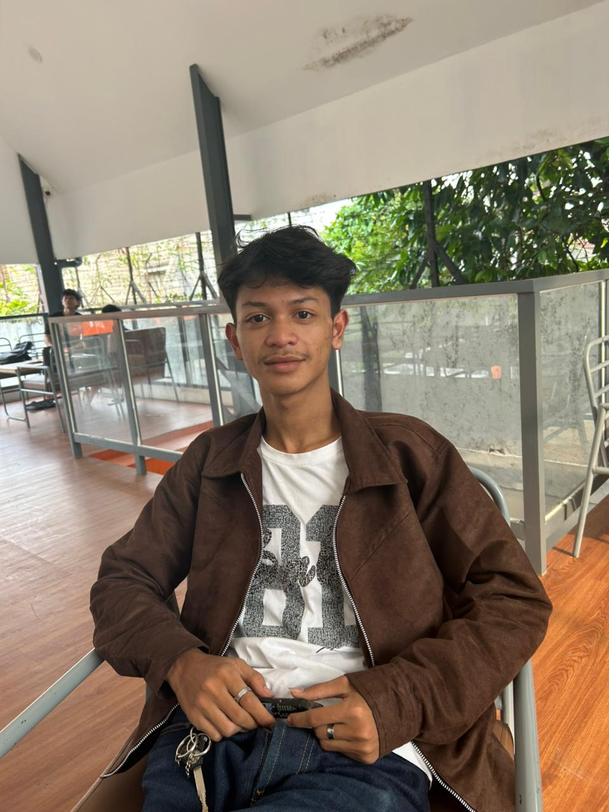

Project Digital E-Book
ADMINISTRASI SISTEM JARINGAN
“Mengintegrasikan Teknologi, Menjaga Keamanan, dan Mengoptimalkan Performa Jaringan Setiap Saat.”
I
Installation
II
Web Server
III
Routing
IV
Sharing
V
DNS
NAVIGASI MODUL
MENUNGGU INPUT... PILIH BAB DI SAMPING
Dewan Pengembang
CORE RESEARCH & DEVELOPMENT TEAM
Maulana Adzhar F.
WEB CREATOR - INSPIRATOR

Dimas Zikry I.
MATERIAL SEARCHERS
Meisya Haya M.
MATERIAL SEARCHERS
M
Muhammad Rafi R.
MATERIAL SEARCHERS - WEB SUPPORTER
Rifanti Syinklia A.
MATERIAL SEARCHERS
Progress Pembelajaran
Ringkasan progres Anda pada modul dan halaman.